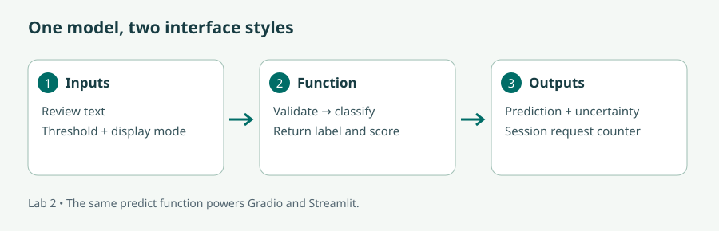

Read the lecture or follow the video route, then complete the illustrated lab and the checks. The videos cover selected concepts; the short bridge notes identify the remaining material. Allow six learning hours per day, with breaks in addition.
Who this module is for & prerequisites
Audience: AI Developers and Engineers; Data Scientists and Machine Learning Practitioners; Web Developers and UI/UX Designers; Entrepreneurs and Product Managers; AI Enthusiasts.
Basic programming experience using Python
Knowledge of NumPy and Pandas
Recommended to have knowledge of Machine Learning
Recommended to have knowledge of Deep Learning
Recommended to have knowledge of AI applications development (covered in Module 1)
New to Python? Before starting, practise defining a function, importing a package, reading a text file, using a dictionary, and creating a virtual environment. Later modules provide a short bridge back to these skills.
Learning objectives — mapped to the curriculum
#
Curriculum objective
Where to learn it
1
Learn to design intuitive and visually appealing artificial intelligence (AI) user interfaces (UIs) using Gradio and Streamlit, incorporating various input and output components to enhance user interaction and experience
Gain proficiency in integrating machine learning models, including pre-trained models or custom-trained models, into Gradio and Streamlit applications, enabling seamless execution and deployment of AI functionalities
Explore the customisation options available in Gradio and Streamlit to tailor UI components such as sliders, dropdown menus, and text inputs, ensuring flexibility and adaptability to different use cases and user preferences
Learn to deploy AI-powered web applications developed with Gradio and Streamlit to production environments, leveraging cloud platforms or server hosting services for accessibility and scalability
Explore advanced features and techniques offered by Gradio and Streamlit, such as real-time updates, state management, and sharing options, to enhance the functionality and usability of AI applications
60 min: user journeys and feedback. 90 min: model/function contracts. 150 min: Gradio lab. 60 min: peer usability review.
Day 2 · State and deployment
120 min: Streamlit lab. 60 min: state and live updates. 90 min: hosting exercise. 90 min: testing and redesign.
The lecture
The interface is part of the AI system
1. Design around a decision
An interface should help a person do something specific. Our review desk helps a course administrator identify reviews that need attention. Before choosing widgets, write the journey: enter a review, select a review threshold, run the model, inspect its prediction, and decide whether a human should read it. A screen full of model parameters would make that journey harder.
Use labels that explain meaning: “Human-review threshold” is clearer than “p”. Put an example in an empty input. Give the user visible feedback while work is running and distinguish “no result yet” from a failed request. Never present an empty box as if it means a negative prediction. Keep essential text readable, support keyboard interaction, and do not encode positive and negative outcomes through colour alone.
Gradio is convenient for wrapping a prediction function. Streamlit is convenient when that prediction is part of a dashboard containing tables, charts, and controls. Both can build useful AI interfaces; the underlying application design determines reliability. Sketch the input, result, and next action on paper before writing code.
2. Separate the model from the screen
A model interface can be described as predict(text, threshold, display) → result. This is an ordinary Python function, so you can call it in a terminal before introducing a web framework. Load a model once and reuse it. Loading weights for every button click adds latency and may exhaust memory under concurrent requests.
Our lab trains a tiny TF–IDF plus logistic-regression classifier on synthetic reviews. TF–IDF represents informative words numerically; logistic regression uses those features to score two classes. This keeps the UI lab small and lets you inspect mistakes. The training set is far too small for a production claim. A pretrained sentiment model can replace the backend without changing the interface contract. A custom-trained Transformer from Module 5 can do the same.
A returned score is not automatically a calibrated probability of correctness. A model can confidently misclassify sarcasm or unfamiliar language. A threshold is an operational rule: below this score, request human review. Increasing it changes the proportion of cases escalated; it does not improve the model's learned representations.
3. Wire components deliberately
In Gradio, define components and bind an event to a Python function. The order of declared inputs matches the function arguments; the returned tuple matches the declared outputs. In our app, a button click produces a prediction, updates a session counter, and displays the counter. A slider-change event marks the old result as stale so the user knows to rerun it.
In Streamlit, the script draws the interface from top to bottom. User interactions normally trigger reruns. A form groups related inputs so one submission processes them together. Without that grouping, an expensive call placed at the top level may run again on each change. The Streamlit execution-flow documentation explains reruns, forms, and fragments.
4. Deploy the whole application
A working Python file is one part of a deployable application. A host also needs a compatible runtime, dependencies, a startup command, memory, networking, and any credentials. Gradio apps can be packaged in Hugging Face Spaces. Streamlit Community Cloud deploys apps from a repository. Each service has its own account, visibility, resource, and availability settings: inspect those settings when deploying.
A production service additionally needs authentication when data is restricted, request limits, observable failures, load tests, and a rollback path. Keep secrets in the host's secret configuration. Do not place private data in public repositories. Queuing helps a server manage demand but does not create more compute. Multiple workers may each load their own model, increasing total memory consumption.
State is information that survives one interaction. A local Python variable often disappears on a rerun; session state is tied to a user's active session. In our apps it holds a request count and the last prediction. Do not put one user's conversation into a global list shared by all visitors. Shared caches are appropriate for reusable model objects, not private conversation histories.
Live updates need an explicit mechanism. Gradio events can respond to changes, while generators can yield incremental output. Streamlit can stream an iterator with st.write_stream, and fragments can rerun a portion of a page. Streaming improves the time until the user sees something; it does not necessarily reduce the time until the complete answer arrives. For a classroom demo, local access may be enough. Temporary sharing links are not durable hosting or an access-control strategy.
Video route
Watch a Python interface take shape
Streamlit Beginner Tutorial · Build Your First Interactive Web App in Python
Watch the tutorial on YouTube. Track which lines define inputs, trigger computation, and display results. This is an independent tutorial; use the supplied code for this course's lab.
Bridge: the video provides a visual entry to Streamlit. Read Lessons 2, 4, and 5 for model integration, hosting, and session isolation, and follow the illustrated Gradio steps below. UI appearance and menus can differ across releases.
Host a Gradio demo on Hugging Face Spaces
Follow the deployment demonstration embedded in the official Hugging Face course. Use it alongside lab step 5; hosting menus and resource policies can change. Watch on YouTube.
Streamlit chat elements with Chanin Nantasenamat
The tutorial embedded in the official Streamlit documentation extends the interface lesson to chat messages and input. Connect it with the session-state discussion in Lesson 5. Watch on YouTube.
Guided lab · 4 hours
Two interfaces, one review model
Resources: a CPU laptop, Python 3.11, and internet for installing packages. Local prediction requires no API key or paid model calls. Hosting requires an account with the chosen service. Keep the archive's folder structure and work inside labs.
Read the training examples. List two limitations before running the model: its vocabulary is narrow and its labels cannot represent mixed sentiment. Install equivalents on macOS/Linux using .venv-ui/bin/python.
"""A deliberately tiny custom-trained model: useful for UI work, not deployment accuracy."""
from functools import lru_cache
from sklearn.pipeline import make_pipeline
from sklearn.feature_extraction.text import TfidfVectorizer
from sklearn.linear_model import LogisticRegression
@lru_cache(maxsize=1)
def load_model():
examples = [
("excellent clear lesson", 1), ("helpful teacher and useful exercises", 1),
("great course I enjoyed it", 1), ("good practical examples", 1),
("I love the clear explanations", 1), ("wonderful helpful workshop", 1),
("terrible confusing lesson", 0), ("unhelpful teacher and boring exercises", 0),
("bad course I disliked it", 0), ("poor unclear examples", 0),
("I hate the confusing explanations", 0), ("awful unhelpful workshop", 0),
]
model = make_pipeline(TfidfVectorizer(), LogisticRegression(random_state=42))
model.fit([x for x, _ in examples], [y for _, y in examples])
return model
def predict(text, threshold=0.6, display="Detailed"):
if not text or not text.strip():
return "Please enter a review."
if len(text) > 2000:
return "Please use 2,000 characters or fewer."
probabilities = load_model().predict_proba([text])[0]
confidence = float(max(probabilities))
label = "Positive" if probabilities[1] >= probabilities[0] else "Negative"
if confidence < threshold:
label = "Needs human review"
if display == "Label only":
return label
return f"{label} | model score: {confidence:.2f} (uncalibrated; not a guarantee)"

Illustration 1. Keep the model contract independent of the framework.
Run .venv-ui\Scripts\python.exe module02/gradio_app.py and open the printed local URL. Enter “excellent clear lesson”. Submit it, then move the threshold to 0.95 and submit again. A high threshold should send more examples for human review. Open a second browser session and check that its counter starts at zero.
import gradio as gr
from backend import predict
def submit(text, threshold, display, count):
return predict(text, threshold, display), count + 1, str(count + 1)
with gr.Blocks() as demo:
gr.Markdown("# Review desk\nA tiny teaching model. Review predictions before using them.")
count = gr.State(0)
review = gr.Textbox(label="Course review", placeholder="The explanations were clear", lines=3)
threshold = gr.Slider(0.5, 0.95, value=0.6, step=0.05, label="Human-review threshold")
display = gr.Dropdown(["Detailed", "Label only"], value="Detailed", label="Output format")
run = gr.Button("Analyse review", variant="primary")
result = gr.Textbox(label="Prediction")
total = gr.Textbox(label="Requests in this session", value="0")
run.click(submit, [review, threshold, display, count], [result, count, total])
threshold.change(lambda: "Threshold changed. Select Analyse review to update.", outputs=result)
if __name__ == "__main__":
demo.queue().launch()
Expected screen: a multiline review input, threshold slider, output dropdown, Analyse review button, prediction box, and request count. The diagram shows their roles rather than an exact product screenshot. Try “great, another confusing lesson” and explain why the tiny model may fail.
Stop Gradio with Ctrl+C. Run the command below. Submit the same examples and compare predictions. The model function is shared, so identical inputs and thresholds should yield the same results.
.venv-ui\Scripts\python.exe -m streamlit run module02/streamlit_app.py
import streamlit as st
from backend import predict, load_model
st.set_page_config(page_title="Review desk", page_icon="📝")
st.title("Review desk")
st.caption("A tiny teaching model. Predictions require human review.")
@st.cache_resource
def cached_model():
return load_model()
cached_model()
if "count" not in st.session_state:
st.session_state.count = 0
with st.form("review_form"):
review = st.text_area("Course review", max_chars=2000)
threshold = st.slider("Human-review threshold", 0.5, 0.95, 0.6, 0.05)
display = st.selectbox("Output format", ["Detailed", "Label only"])
submitted = st.form_submit_button("Analyse review")
if submitted:
with st.spinner("Analysing…"):
st.session_state.result = predict(review, threshold, display)
st.session_state.count += 1
if "result" in st.session_state:
st.info(st.session_state.result)
st.metric("Requests in this session", st.session_state.count)
Change a form field before submitting: the previous result should remain until the form is submitted. Explain how a form avoids unnecessary inference. The spinner provides processing feedback; on this small model it may appear only briefly.
In Gradio, bind a separate textbox's change event to lambda text: f"{len(text)} / 2000 characters" and display it in a status textbox. This gives immediate feedback without running inference. In Streamlit, put a character-count input outside the form and observe how each change reruns the script.
For a pretrained-model extension, install transformers<5 and torch in this environment. Replace the cached model with a pipeline("sentiment-analysis", model="distilbert/distilbert-base-uncased-finetuned-sst-2-english"), read its label and score, and preserve the same input validation and threshold rule. Expect an initial weight download and greater memory use. Compare it with the custom model on five reviews; neither result substitutes for a representative evaluation.
Illustration 2. Verify a deployed app from outside your own session.
Create a Hugging Face Space with the Gradio SDK. Copy gradio_app.py to its root as app.py, add backend.py, and add a requirements.txt containing Gradio and scikit-learn. Preserve the Space's generated SDK metadata. Commit the files and watch the build logs.
For Streamlit, create a repository containing streamlit_app.py, backend.py, and a requirements file containing Streamlit and scikit-learn. Connect that repository in Community Cloud, select the branch and entrypoint, and deploy using a supported Python runtime.
This backend has no secrets. If you later replace it with a hosted model, set credentials in host configuration and read them server-side.
Open each hosted URL in another browser. Try a normal review, a blank review, and an input exceeding the limit where the widget permits it. Check build logs if imports fail. Record memory and startup behaviour. Stop or remove unused paid resources.
A public teaching demo is the deployment exercise. For a production handover, additionally document authentication, capacity limits, health monitoring, pinned dependencies, and rollback to a known working revision.
Submit: local screenshots of both apps, hosted URLs or hosting build evidence, a five-case test table, and a paragraph explaining session state. For a hosting-account restriction, complete the packaging and document the blocked deployment step; do not label it deployed.
Help when you need it
Lab solutions
These worked answers correspond to the five lab steps. The linked files are complete reference implementations in the lab archive. Compare behaviour as well as appearance.
Step 1 — The shared prediction backend
Reference solution: backend.py. The cached function trains one TF–IDF/logistic-regression pipeline; predict validates the input, gets class scores, applies the review threshold, and formats the result.
Two valid limitations are that twelve synthetic reviews cannot represent the diversity of real feedback and that the two classes cannot describe mixed sentiment. Word-based features can miss the scope of negation or sarcasm. These are model limitations even when the UI is implemented correctly.
From labs, inspect a prediction without opening either UI:
With the supplied backend, the lower threshold gives Positive and the higher one gives Needs human review. The score is about 0.60; small numerical differences across library versions are possible.
Step 2 — Gradio wiring and session state
Reference solution: gradio_app.py. The submit callback receives text, threshold, output format, and count. Its three returned values update the prediction, stored count, and visible count in the same order as the declared outputs.
The first submission changes the counter from 0 to 1; a second submission changes it to 2. Moving the threshold marks the prediction stale, then selecting Analyse review computes it again. A separate browser session starts with its own counter.
If the outputs appear in the wrong widgets, compare the callback's return order with the output-component list. If all visitors share one counter, replace global user state with gr.State as in the reference. The cached model can be shared; the request count should not be.
Step 3 — Streamlit reruns
Reference solution: streamlit_app.py. Launch it using python -m streamlit run with the lab environment's interpreter, rather than running the file as an ordinary script.
The form collects changes until submission. Only the submitted branch calls predict and increments the count. Session state preserves the last result and count across reruns. The cached resource avoids rebuilding a reusable model on each run. Given identical text, threshold, and output format, both interfaces call the same backend and should return the same prediction string.
Example explanation: “A rerun redraws the Streamlit page, but session state keeps my previous result. The form batches input changes into one submission, so merely moving a slider inside the form does not run the prediction function.”
Step 4 — Live feedback and the pretrained-model extension
Inside the existing Gradio with gr.Blocks() block, after review is defined, add:
Committing that input triggers a rerun; it does not increment the prediction counter because the form was not submitted.
For the pretrained extension, after installing the additional packages in lab step 4, replace load_model in a working copy of backend.py with:
from functools import lru_cache
from transformers import pipeline
@lru_cache(maxsize=1)
def load_model():
return pipeline(
"sentiment-analysis",
model="distilbert/distilbert-base-uncased-finetuned-sst-2-english",
)
Replace the predict_proba and label-selection lines in predict with:
result = load_model()(text, truncation=True)[0]
confidence = float(result["score"])
label = result["label"].title()
Keep blank/length validation before this call and keep the threshold and display-format logic after it. The pipeline returns a list containing a label/score dictionary, rather than the two-column probability array from scikit-learn. Compare both backends on the same five reviews; do not assume the pretrained model is correct on sarcasm or mixed feedback.
Step 5 — Hosting files and a completed test checklist
A correct Gradio deployment package contains:
app.py # copy of gradio_app.py
backend.py
requirements.txt # gradio and scikit-learn
README.md # preserve the Space's generated SDK metadata
A correct Streamlit package contains streamlit_app.py, backend.py, and a requirements.txt listing Streamlit and scikit-learn. Select streamlit_app.py as the entrypoint. These are separate packages; uploading only the entrypoint causes the backend import to fail.
Test
Expected result with the supplied backend
Blank review
“Please enter a review.”
More than 2,000 characters sent to the backend
A length-validation message; Streamlit may prevent entry before submission
“excellent clear lesson”, threshold 0.5
Positive
Same review, threshold 0.95
Needs human review
First submission in a new session
Count becomes 1; other sessions retain their own counts
If local use works but deployment fails, read the first meaningful build-log error: missing package → requirements; missing backend → upload that file; wrong entrypoint → host configuration. A hosted URL is evidence only after you have opened and tested it. When deployment is blocked by account access, submit the package and actual error instead of claiming it is live.
Check your understanding
Why not load the model inside every submit handler?
Repeated initialization adds avoidable latency and memory pressure. Cache a reusable model while keeping user-specific state separate.
Why might a slider change trigger extra model calls in Streamlit?
Interactions rerun the script. Put related controls in a form or guard expensive work behind an explicit submit action.
Does a score of 0.9 mean the prediction is correct 90% of the time?
Only if suitable calibration and evaluation support that interpretation. Our tiny model's score is uncalibrated.
Module summary
A useful interface makes inputs, processing, results, and uncertainty understandable. Gradio binds events to functions; Streamlit reruns scripts and preserves selected values through session state. Separate the model from the screen, reuse expensive resources, isolate user state, and test the deployed application as well as the local one.
Progress is stored in this browser when storage is available. It is a personal checklist, not a certificate or assessment record.